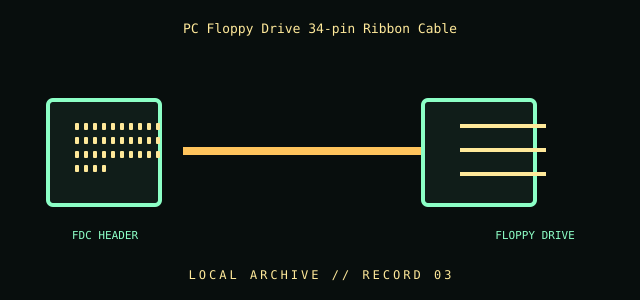

[ INDIVIDUAL COMPONENT // CABLES & ADAPTERS ]
PC Floppy Drive 34-pin Ribbon Cable
Legacy internal cable assembly for a PC floppy disk controller and 3.5-inch or 5.25-inch floppy drive. This is the classic 34-position ribbon interface, not a 40-pin ATA lead.

IDENTIFICATION / SAFETY: Match the complete part number, connector direction, host requirements, and revision to manufacturer documentation. A matching connector shape is not proof of protocol or electrical compatibility.
Specifications
| Catalog subcategory | Data, peripheral, and high-speed cables |
|---|---|
| Catalog identity | PC-compatible floppy-disk-drive (FDD) 34-position ribbon cable |
| Protocol / standard | 34-position IDC connector family for a PC floppy controller/drive interface. Exact cable construction, twist, and connector placement vary; this record does not assert a universal per-pin wiring map. |
| Connector ends | FDC HEADER → FLOPPY DRIVE; direction and gender are specified where the manufacturer source verifies them. |
Compatibility & electrical hazards
Use with a matching floppy controller and drive only. Many PC-style cables include a conductor twist between drive connectors that affects drive-select mapping; not every 34-way cable has identical routing. Confirm the exact controller/drive manual, connector key, twist, and drive-select setup before use. Never force an unkeyed plug.
Archival & handling notes
Keep ribbon untwisted except for any factory-formed section, label drive-end order, and document connector count and cable twist. Old IDC contacts and insulation can become brittle; inspect before insertion and do not fold sharply.
For collection records, photograph both connector faces and all labels; record manufacturer, complete SKU, revision, provenance, condition, and the source document used for identification. Do not apply power to an unidentified or damaged cable.
Sources & further reading
- Internet Archive — IBM PC/AT Technical Reference catalog searchHistorical manual discovery link; use the machine-specific technical reference for pinouts and drive-selection details.
- IBM documentation portalManufacturer documentation index.
Source values are limited to the linked manufacturer or standards documentation. Features not stated there are intentionally left unspecified; confirm the exact cable revision and host-device manuals before use.